The customer journey redesigned against the Customer OS. Each OS defines states, transparency and fairness — never chat vs screens — so the app's existing paradigm is kept: transactional steps stay screen-based, status & nudges stay in chat (as today). The highlighted items are the OS-driven fixes delivered within that paradigm.
New Net-new, fixes an OS gapImproved Existing, reworkedKept Already strong — carried overS# the OS state it implementschat delivered as a chat message (app's current paradigm)posture the Continuity OS posture driving the messagequality the SQ quality-state / fault-domain reflectedT# the At-Risk Resolution tool (T1–T8) behind the messageCM the Customer Management concept reflectedstate the Recovery case state / rule reflectedexit the Exit OS state / rule reflected
The real booking flow, anchored to the live Figma. Every "Current" screen below is the actual exported app screen — not a redraw. The only thing added is where the B2I OS introduces a genuinely missing state. Scroll sideways →
verified
How to read this honestly: screens tagged Current are the real app images, shown untouched. After auditing against B2I, the things I previously called "improvements" were already in the app — confirm-location-before-payment (screen 8) and refundable-deposit framing (screens 4 & 6) already exist. Two OSes touch this flow: B2I adds the one new screen — install-contact ("who will be home?"); and CM OS adds returning-customer recognition + data carry-forward at the OTP step (annotated on screen 7). Everything else is the untouched live app.
1Recharge-based introCurrent
Real app screen — "रिचार्ज वाला घर का नेट". Untouched.
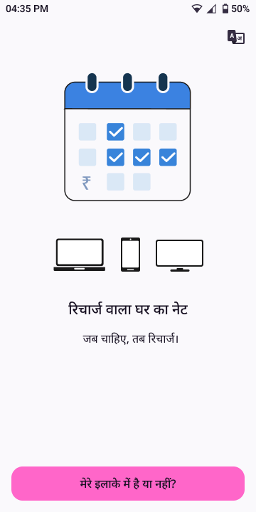
chevron_right
2Serviceable resultCurrent
Real app screen — "यहाँ घर का नेट लग सकता है". Untouched.
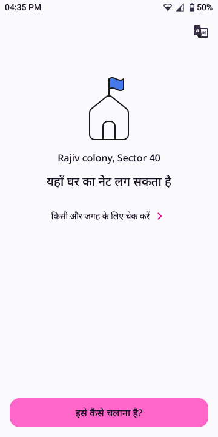
chevron_right
3How it worksCurrent
Real app screen — 3-step explainer. Untouched.
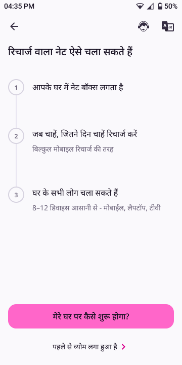
chevron_right
4How it startsCurrent
Real app screen — visit + security fee. Note: refundable framing already here ("लौटाने पर यह रकम वापस मिल जाती है").
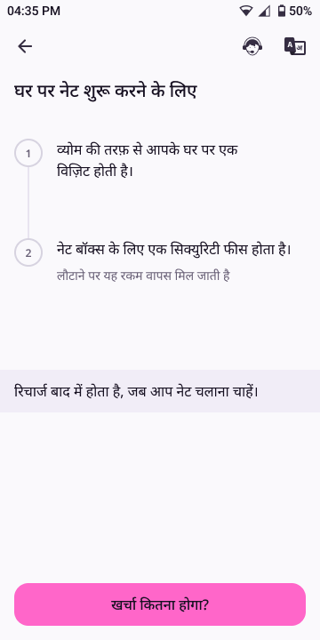
chevron_right
5Plan durationsCurrent
Real app sheet — 1/2/7/14/28 day recharge options. Untouched.
Real app screen — number + name, then "₹100 का भुगतान करें". Screen itself untouched; CM OS adds returning-customer behaviour →
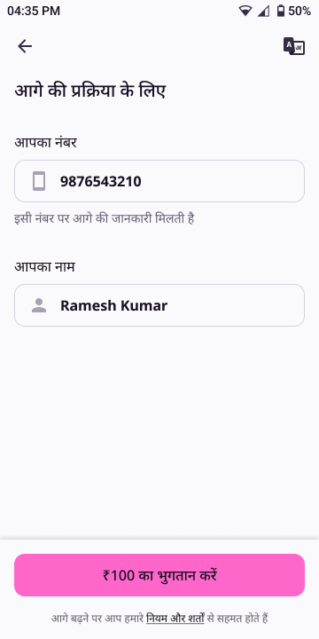
policyWhat CM OS adds here
This OTP step is where CM OS creates / resolves the person (customer_id). For a returning customer it must recognise them — "वापसी पर स्वागत है" — and carry forward saved details (address, net-name) instead of asking again.
CM OS · sign-up + re-entry boundary (CM-2)
chevron_right
8Confirm locationCurrent
Real app screen — "पेमेंट से पहले नेट लगवाने की लोकेशन कन्फर्म करें". This already does the pre-pay location check. Untouched.
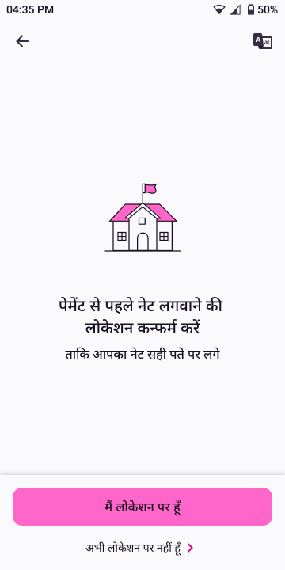
chevron_right
9Payment methodsCurrent
Real app screen — UPI / cards / netbanking. Untouched.
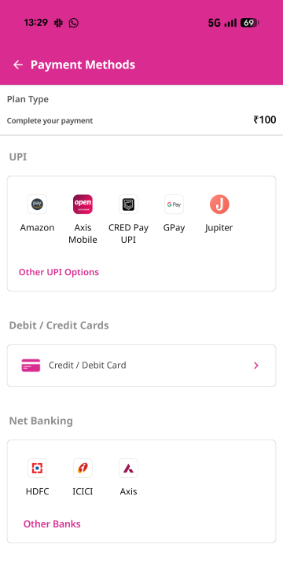
chevron_right
10Who'll be home?New · B2IS2
The only genuine B2I gap in booking: the app never asks who will be present for setup (dispatch prerequisite). New screen, in the app's own visual language.
New screen
04:35 PMwifisignal_cellular_altbattery_full
groups
सेटअप के समय घर पर कौन होगा?
हमारा साथी नेट लगाने आएगा — घर पर किसी का होना ज़रूरी है, ताकि सेटअप बिना रुकावट हो।
person
मैं खुद रहूँगा/रहूँगी
इसी नंबर पर बात होगी — 98XXXXXX10
group
कोई और रहेगा
उनका नाम और नंबर दें
policyWhy B2I requires this
B2I makes install-contact a dispatch prerequisite — a technician can't be sent until the system knows who will be home. Today's flow never captures it, which is a leading cause of failed visits.
B2I OS · state S2 · INV-B2I-02
chevron_right
11Payment statusCurrent
Real app screen — "धैर्य रखें, भुगतान की स्थिति जाँची जा रही है". Untouched.
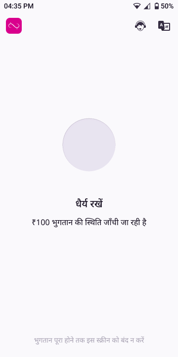
chevron_right
12Net name (SSID)Current
Real app screen — choose a net name. Untouched.
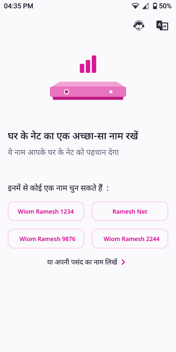
chevron_right
13Net name savedCurrent
Real app screen — name confirmed → "अब पता भरें". Untouched.
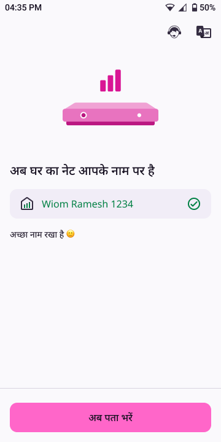
chevron_right
14Full addressCurrent
Real app screen — house / street / locality. Untouched.
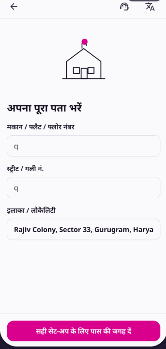
chevron_right
15Landmark confirmCurrent
Real app screen — landmark type + name. Untouched.
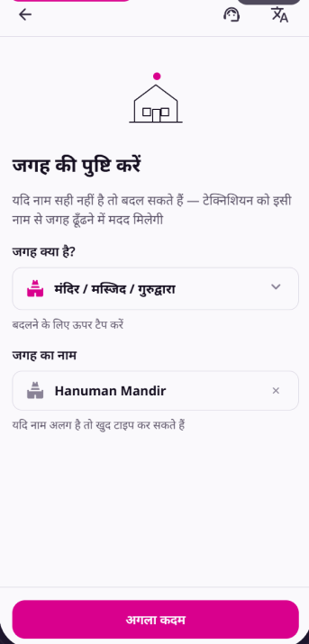
chevron_right
16Voice directionsCurrent
Real app screen — optional voice note for directions. Untouched.
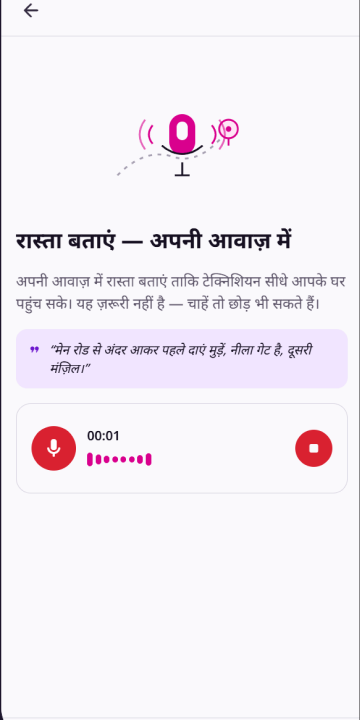
chevron_right
17Booking confirmed → chatCurrent
Real app screen — booking confirmed, hands into chat (scheduling via callback). Untouched.
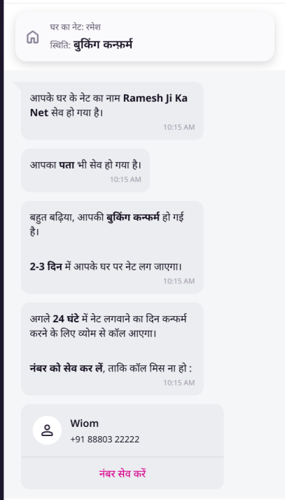
The complete, real booking-confirmation → installation journey, every screen in order from the live Figma — chat-driven, untouched. Nothing curated out. The only additions are the few screens an OS genuinely requires, drawn in the app's own chat style. Scroll sideways →
verified
Honest note: all "Current" screens are the real exported app images, shown complete. Earlier I had skipped real steps (Wi-Fi connect sub-flow, password entry, WhatsApp share, selfie, rating, thank-you + happy-code, recharge-validity) — those are all included now. OS-added screens are marked New/Improved with an "OS adds →" card.
A · Scheduling
1Chat: ask install dayCurrent
Real chat entry — bot asks the install day with CTAs "यह दिन सही है" / "कोई अन्य दिन चुनें". The flow starts here. Untouched.
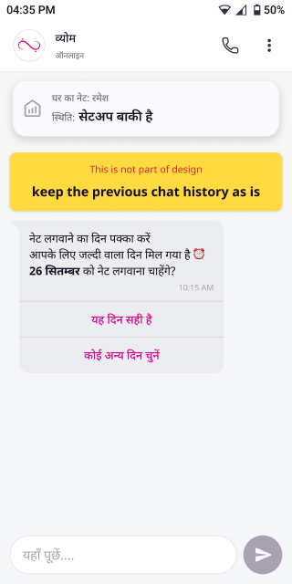
chevron_right
2Day prompt (chat)Current
Real chat — "नेट लगवाने का दिन पक्का करें". Untouched.
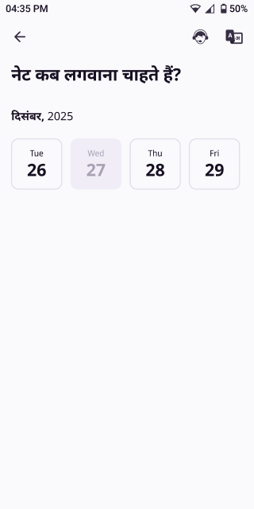
chevron_right
3Day pickerCurrent
Real screen — "नेट कब लगवाना चाहते हैं?" date picker. Untouched.
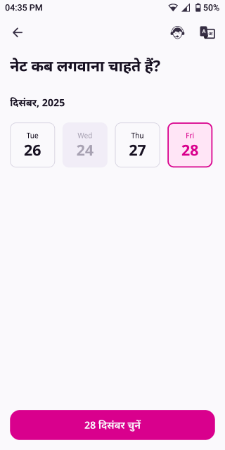
chevron_right
4Day confirmed + finding engineerCurrent
Real chat — day confirmed → "इंजीनियर ढूंढा जा रहा है" (S3/S8 already exist). Untouched.
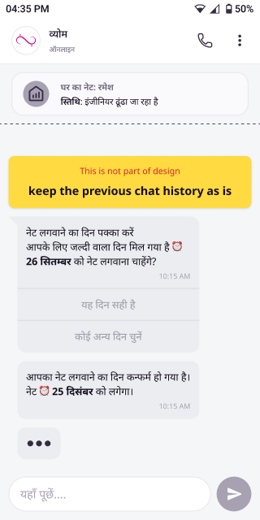
chevron_right
5Reschedule anytimeNew · B2IS12
OS adds: universal reschedule right from any state — chat action, no penalty. Real chat style.
New
04:35 PMwifinetwork_cellbattery_full
∞
व्योम
ऑनलाइन
callmore_vert
insights
घर का नेट: रमेश
स्थिति: सेटअप बाकी है
उस दिन मैं घर पर नहीं रहूँगा, क्या दिन बदल सकते हैं?10:15 AM
बिलकुल, कोई दिक़्क़त नहीं। जो दिन आपके लिए सही हो वो चुन लें — कोई चार्ज नहीं, बुकिंग या जमा राशि पर कोई असर नहीं।
नया दिन चुनें
10:15 AM
यहाँ पूछें....
send
policyWhy B2I adds this
B2I makes reschedule a universal right from any active state — not just at day-pick — with no penalty.
Real screen — bill ₹300, refundable note. Untouched.
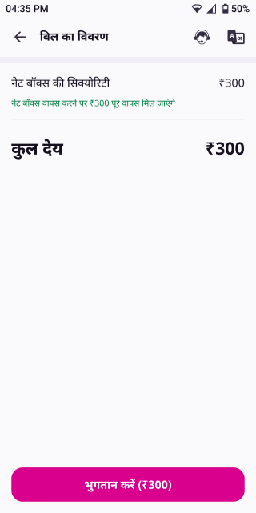
chevron_right
15Payment successCurrent
Real screen — "भुगतान सफल हुआ! ₹300". Untouched.
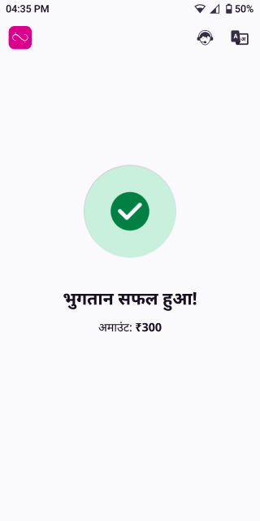
chevron_right
16Installing (with video)Current
Real chat — "नेटबॉक्स लग रहा है, 20–30 मिनट" + video (S10). Untouched.
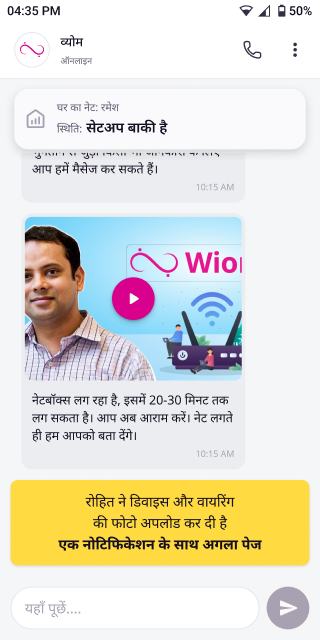
chevron_right
17Couldn't complete → full refundNew · B2IS13
OS adds: honest closure if setup can't happen — full refund, no blame, no limbo. Real chat style.
New
04:35 PMwifinetwork_cellbattery_full
∞
व्योम
ऑनलाइन
callmore_vert
insights
घर का नेट: रमेश
स्थिति: रिफ़ंड प्रक्रिया में
अभी हम आपके यहाँ सेटअप नहीं कर पाए। तकनीकी कारण से इस जगह नेट लगाना संभव नहीं हुआ — यह हमारी ओर से है, आपकी कोई गलती नहीं।10:15 AM
आपका पूरा पैसा बिना कटौती वापस आ जाएगा।
वापस मिलेगा₹400
कब2–3 दिन, उसी UPI पर
आगे जब हम आपके इलाक़े में पहुँचेंगे, सबसे पहले आपको बताएँगे।10:15 AM
यहाँ पूछें....
send
policyWhy B2I adds this
Every booking must reach a clean outcome — an honest drop with full refund + attribution, never silent limbo.
B2I OS · state S13 (BOOKING_DROPPED) · INV-B2I-04 · C2
chevron_right
D · Connect the net
18Net live + connect prompt (chat)Current
Real chat — "नेट चल गया", "2 दिन का नेट दिया जा रहा है, फ़ोन से कनेक्ट करें" → "नेट कनेक्ट करें". Untouched.
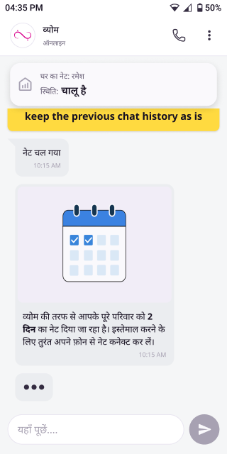
chevron_right
19Your net nameCurrent
Real screen — "यह है आपके नेट का नाम" → "कनेक्ट करें". Untouched.
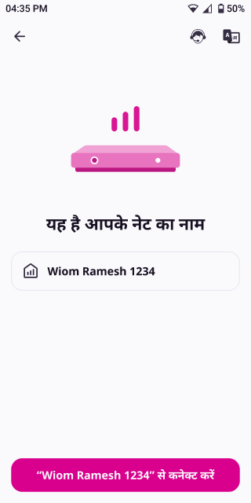
chevron_right
20Wi-Fi settingsCurrent
Real screen — phone Wi-Fi list, pick the net. Untouched.
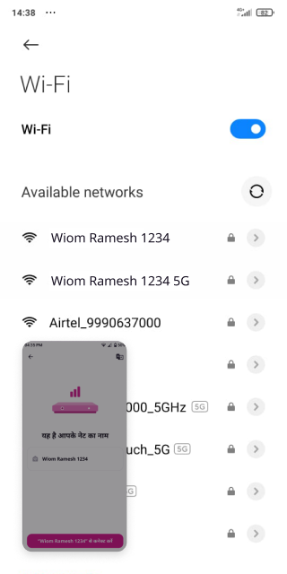
chevron_right
21Connecting…Current
Real screen — connecting loader. Untouched.
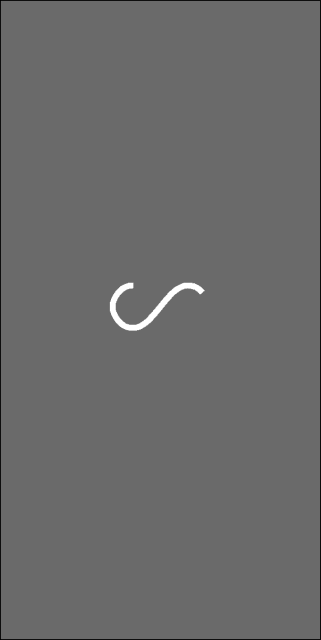
chevron_right
22Net connectedCurrent
Real screen — "आपके घर का नेट कनेक्ट हो गया है". Untouched.
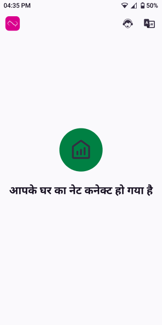
chevron_right
23Speed check — today (video)Current
Real screen — a video the customer self-rates ("रुक-रुक कर चला / बढ़िया चला"). This is the screen SQ replaces. Untouched.
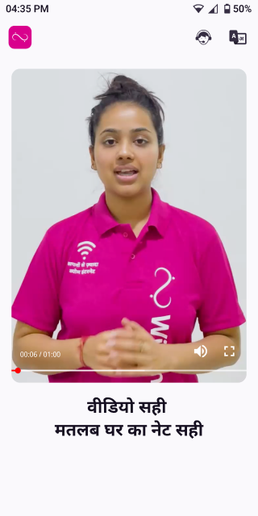
chevron_right
23aReal speed test — runNew · SQS14
OS replaces the video with this: the app runs a real measurement itself — one tap, no third-party app, no self-rating. Drawn in the app's own full-screen style.
New · SQ
04:35 PMwifinetwork_cellbattery_full
∞
headset_mictranslate
अब आपके नेट की असली स्पीड जाँचते हैं
एक टैप में हम ख़ुद आपके नेट की स्पीड माप लेंगे — आपको कुछ नहीं करना। बस 10–15 सेकंड।
माप रहे हैं…
नेट बॉक्स से सीधे जाँच हो रही है
policyWhy I designed it this way
Not a third-party Ookla hunt, not hidden backend-only. The app measures it itself on one tap (download / upload / ping through the net box) so the customer gets a real number, not a feeling — and it reconciles with net-box telemetry on the backend.
SQ Driver OS · verified completion · INV-SQ-16
chevron_right
23bReal speed test — resultNew · SQS14
The measured result: a concrete number the customer can trust, and the completion evidence SQ needs — "installed & working" verified by measurement, not opinion.
New · SQ
04:35 PMwifinetwork_cellbattery_full
∞
headset_mictranslate
आपका नेट बढ़िया चल रहा है
94
Mbps
डाउनलोड94 Mbps
अपलोड42 Mbps
पिंग12 ms
हालतcheck_circleबढ़िया
verified
यह असली माप है — सेटअप सफल माना गया। आगे भी कभी स्पीड जाँचनी हो, यहीं से कर सकते हैं।
verifiedWhat this satisfies
Completion is now verified by a real number (94 Mbps), reconciled with telemetry — not the customer grading a video. And the same one-tap test stays available later for any "net slow?" moment (links to the Service Quality tab).
SQ Driver OS · S14 · INV-SQ-16
chevron_right
E · Password
24CongratulationsCurrent
Real screen — "बधाइयाँ" → "पासवर्ड सेट करें". Untouched.
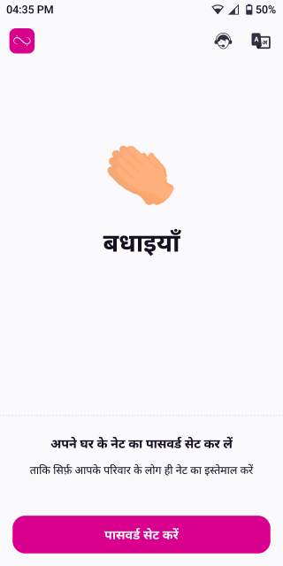
chevron_right
25Set passwordCurrent
Real screen — "घर के नेट का पासवर्ड सेट करें", min 8 chars. Untouched.
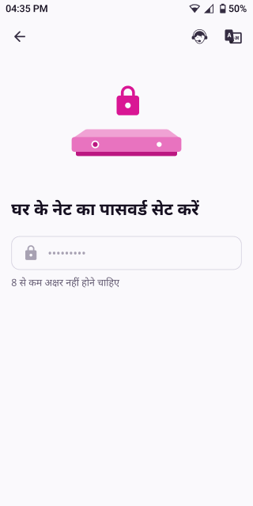
chevron_right
26Password entryCurrent
Real screen — typing password → "नेट का पासवर्ड सेव करें". Untouched.
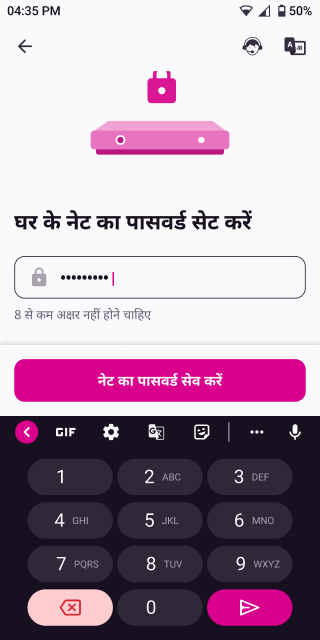
chevron_right
27Password set → shareCurrent
Real screen — "पासवर्ड सेट हो गया, परिवार के साथ नेट शेयर करें" + WhatsApp / QR. Untouched.
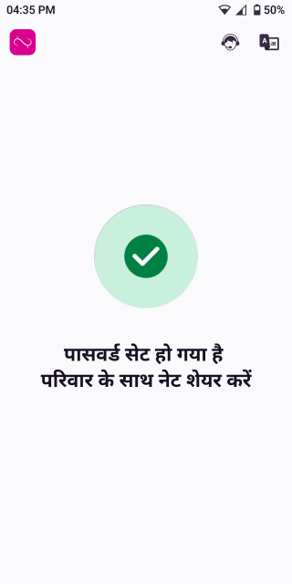
chevron_right
F · Share with family
28Share net detailsCurrent
Real screen — net name + password card, "Whatsapp पर शेयर करें" / "QR कोड दिखाएं". Untouched.
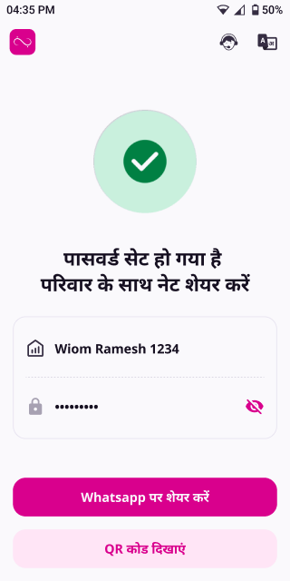
chevron_right
29WhatsApp shareCurrent
Real screen — WhatsApp "Send to" sheet. Untouched.
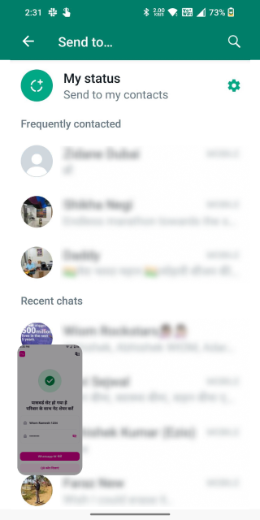
chevron_right
30Net shared → selfie promptCurrent
Real screen — "परिवार के साथ नेट शेयर हो गया है" → "सेल्फी लेकर शेयर करें" / skip. Untouched.
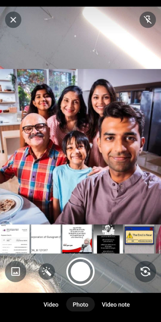
chevron_right
31Selfie captureCurrent
Real screen — front-camera family selfie capture. Untouched.
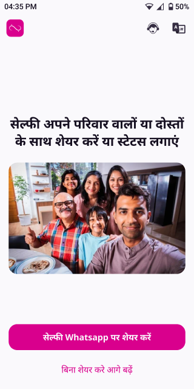
chevron_right
32Selfie preview + shareCurrent
Real screen — selfie preview → "सेल्फी Whatsapp पर शेयर करें" / skip. Untouched.
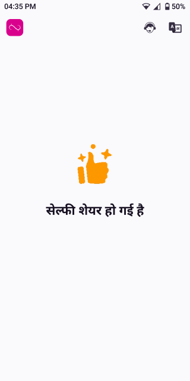
chevron_right
G · Rate & wrap up
33Selfie shared → rate promptCurrent
Real screen — "सेल्फी शेयर हो गई है" → "अपने नेट लगवाने के अनुभव को रेट करें". Untouched.
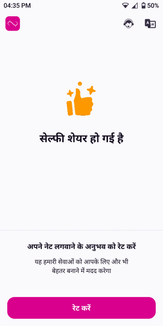
chevron_right
34Rate experience (stars)Current
Real screen — 1–5 star rating + reasons + Play Store rating. Untouched.
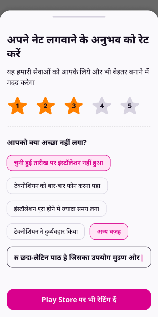
chevron_right
35Thanks + happy code (chat)Current
Real chat — "अनुभव शेयर करने के लिए धन्यवाद" + "हैप्पी कोड: 1244 इंजीनियर से शेयर करें". Untouched.
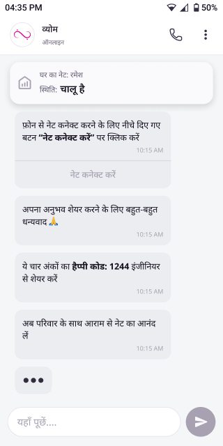
chevron_right
36Recharge validity (chat)Current
Real chat — "आपका नेट 2 दिन के लिए रिचार्ज है, 28 दिसंबर शाम 5 बजे तक चालू रहेगा". Untouched.
chevron_right
37Next recharge CTA (chat)Current
Real chat — "अगला रिचार्ज करने के लिए नीचे बटन पर क्लिक करें" → "अगला रिचार्ज करें". Hands to Continuity. Untouched.
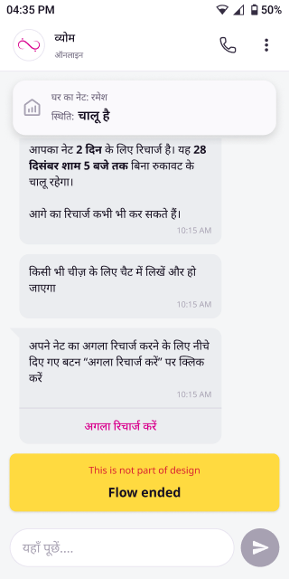
Keeping an active customer's net running. The Continuity OS turns recharge into a posture-driven system — non-payment is a neutral, reversible pause, never churn, and the system never pressures and never asks you to pay for broken net. Recharge plumbing stays screen-based (as today); posture-driven status & nudges live in chat. Each item shows the posture driving it. Scroll sideways →
warning_amber
Not anchored to real designs yet. The screens in this tab are illustrative mockups in my own style, built before the real Figma was available — they are not the live app and any "Current/Kept" framing here is a placeholder. Treat only the OS-driven idea as the takeaway; the visuals will be re-anchored to the real designs once that flow’s Figma is shared. (The Booking tab is already corrected.)
A · Active & healthy
1Net activeKeptchatNormal
Healthy state — sticky banner shows "चालू है". No nudges, no pressure. Carried over.
10:00signal_cellular_altwifibattery_full
घर का नेट · सुनीता
चालू है · 12 दिन बाक़ी
आज
आपका नेट बढ़िया चल रहा है 🎉 कुछ भी ज़रूरत हो तो यहीं पूछ लें।10:00 AM
कुछ पूछना है? यहाँ लिखें…
send
chevron_right
2Gentle reminderImprovedCP-CON-05chatNormal
Fix: a real, cadence-bounded pre-expiry reminder (today the reminder screen exists but nothing triggers it). Calm, benefit-first — no guilt, no urgency.
Now triggers
9:00signal_cellular_altwifibattery_full
घर का नेट · सुनीता
चालू है · 2 दिन बाक़ी
event2 दिन में रिचार्ज
आपका मौजूदा रिचार्ज 2 दिन में पूरा हो रहा है। जब सही लगे, आसानी से रिचार्ज कर सकती हैं।9:00 AM
कुछ पूछना है? यहाँ लिखें…
send
chevron_right
3Choose a planKept
Recharge plan selection — already a screen in the app. Carried over (PayG plans, validity, price).
9:01signal_cellular_altwifibattery_full
रिचार्ज प्लान
boltअपना प्लान चुनें
कौन-सा रिचार्ज करना है?
जितने दिन का चाहें — एक दिन का भी चलेगा।
30 दिन · 100 Mbps
सबसे लोकप्रिय
₹500
7 दिन · 100 Mbps
छोटी अवधि
₹150
1 दिन · 100 Mbps
आज भर के लिए
₹30
check_circle
कोई भी रिचार्ज आपका नेट तुरंत चालू कर देता है — चाहे 1 दिन का हो या 30 का।
chevron_right
4Recharge successKept
Bill summary → UPI/QR payment → success. Plumbing carried over. Recharge reaffirms continuity & resets the window.
9:03signal_cellular_altwifibattery_full
check_circle
रिचार्ज हो गया!
आपका नेट अगले 30 दिन के लिए चालू है।
प्लान30 दिन · 100 Mbps
राशि₹500
अगली तारीख़13 जुलाई
स्थितिboltचालू है
chevron_right
B · Reservation window
5Recharge endedImprovedReservationchatNormal
Fix: validity end framed as a neutral, reversible pause — not "service suspended". Net off, but connection held, recharge one tap away.
Reframed
10:00signal_cellular_altwifibattery_full
घर का नेट · सुनीता
रिचार्ज खत्म · चालू करने के लिए तैयार
pause_circleआपका रिचार्ज खत्म हो गया
कोई बात नहीं — आपका कनेक्शन सुरक्षित है। जब चाहें रिचार्ज करें, नेट तुरंत चालू हो जाएगा।10:00 AM
कुछ पूछना है? यहाँ लिखें…
send
chevron_right
6Clarify intentNewT+10–15chatClarify-state-first
New: the verification window (T+10–15). Purpose is to clarify what the customer wants, not to ramp up urgency. Offers continue / pause / stop — all neutral.
New msg
9:00signal_cellular_altwifibattery_full
घर का नेट · सुनीता
कनेक्शन सुरक्षित है
help_outlineआगे कैसे चलना चाहेंगी?
कुछ दिन से नेट बंद है। हम सिर्फ़ समझना चाहते हैं कि आप क्या चाहती हैं — कोई जल्दी नहीं।
9:00 AM
कुछ पूछना है? यहाँ लिखें…
send
chevron_right
7Welcome backNewReversalchatNormal
New: recharging any time before pickup instantly restores service — zero fee, zero penalty, one confirmation. Frictionless reversal.
New msg
2:00signal_cellular_altwifibattery_full
घर का नेट · सुनीता
फिर से चालू · 30 दिन
मैंने अभी रिचार्ज कर दिया2:00 PM
celebrationवापसी पर स्वागत है!
आपका नेट फिर से चालू हो गया — बिना किसी अतिरिक्त चार्ज के। सब कुछ वैसा ही है जैसा पहले था।2:00 PM
कुछ पूछना है? यहाँ लिखें…
send
chevron_right
C · Special postures
8Net broken — no nudgeNewC2chatRecovery-first
New — the key fairness fix: when net is broken (Wiom's fault), recharge nudges are suppressed entirely. Never ask a customer to pay for service that isn't working.
New posture
11:00signal_cellular_altwifibattery_full
घर का नेट · सुनीता
दिक़्क़त ठीक कर रहे हैं
build_circleहम दिक़्क़त ठीक कर रहे हैं
आपके इलाक़े में नेट में दिक़्क़त है — यह हमारी ओर से है। जब तक ठीक न हो, हम आपसे रिचार्ज के लिए नहीं कहेंगे।11:00 AM
ठीक होते ही आपको यहीं बता देंगे। आपके बंद दिनों की भरपाई भी कर दी जाएगी।11:00 AM
New: an explicit pause option. The system goes completely silent (no reminders) while keeping the recharge link live. Pause is legitimate, never churn.
New msg
9:05signal_cellular_altwifibattery_full
घर का नेट · सुनीता
रोका हुआ है
कुछ दिन के लिए रोकना है9:04 AM
pause_circleठीक है, रोक दिया
हम आपको बार-बार याद नहीं दिलाएँगे। जब भी वापस चाहिए हो, यहीं से एक टैप में रिचार्ज कर लीजिए।9:05 AM
कुछ पूछना है? यहाँ लिखें…
send
chevron_right
10Manage & AutoPayKept
Plan details, AutoPay, payment history. Already a screen in the app — carried over. AutoPay stays voluntary (no coercion).
10:10signal_cellular_altwifibattery_full
मेरा नेट
मौजूदा प्लान30 दिन · 100 Mbps
अगली तारीख़13 जुलाई
स्थितिboltचालू है
autorenew
AutoPay
हर महीने अपने-आप रिचार्ज · ₹50 बचत
chevron_right
receipt_long
पेमेंट हिस्ट्री
chevron_right
wifi
नेट का नाम / पासवर्ड
chevron_right
The SQ Driver OS is mostly a backend truth engine — it senses quality from telemetry, classifies a state, and attributes the fault. The customer never sees "SQ state" directly. So this tab is only the customer-facing surfaces that the quality truth enables: honest status, a real speed test, proactive outage messages, fault-aware help, and verified restoration. Each item shows the quality-state / fault-domain it reflects. Scroll sideways →
warning_amber
Not anchored to real designs yet. The screens in this tab are illustrative mockups in my own style, built before the real Figma was available — they are not the live app and any "Current/Kept" framing here is a placeholder. Treat only the OS-driven idea as the takeaway; the visuals will be re-anchored to the real designs once that flow’s Figma is shared. (The Booking tab is already corrected.)
dns
What's NOT a screen: telemetry ingestion (router/netbox ping, latency, packet-loss), the 5-state classification (Healthy / Degraded / Intermittent / Unusable / Unknown), confidence scoring, 8-domain fault attribution, and cluster-degradation detection all live in the backend. The app only consumes the emitted truth and feeds one signal up (the speed test). Everything below is that thin customer-facing layer.
A · Honest status
1Quality statusImprovedchatHealthy
Fix: status reflects real quality, not just paid/unpaid. "Live" now means working well — backed by telemetry, not assumed.
Real quality
10:00signal_cellular_altwifibattery_full
घर का नेट · सुनीता
बढ़िया चल रहा है · 94 Mbps
आज
आपका नेट बढ़िया स्पीड पर चल रहा है ✅ पिछले 24 घंटे में कोई दिक़्क़त नहीं।10:00 AM
कुछ पूछना है? यहाँ लिखें…
send
chevron_right
2Run a speed testImprovedsignal up
Fix: a real, on-demand speed test any active customer can run (was a one-time self-rated video). Measured result also feeds SQ telemetry.
Real test
10:02signal_cellular_altwifibattery_full
स्पीड जाँच
आपके नेट की स्पीड
असली स्पीड माप रहे हैं — कुछ सेकंड…
94
Mbps
डाउनलोड94 Mbps
अपलोड42 Mbps
पिंग12 ms
हालतcheck_circleबढ़िया
verified
स्पीड सही है। अगर फिर भी कुछ धीमा लगे, हमें बताएँ — हम जाँच करेंगे।
New — the call-deflection fix: "we already know your area is down" before the customer calls. Targets the ~1050 net-down calls/day (~₹30 each).
New msg
8:30signal_cellular_altwifibattery_full
घर का नेट · सुनीता
इलाक़े में दिक़्क़त · ठीक कर रहे हैं
आज
cell_towerआपके इलाक़े में नेट की दिक़्क़त है
लाजपत नगर में अभी नेट बंद है — हमें पता है और हमारी टीम इसे ठीक कर रही है। आपको कुछ करने की ज़रूरत नहीं।
अगला अपडेटशाम 6 बजे तक
8:30 AM
ठीक होते ही हम आपको यहीं बता देंगे। बंद दिनों की भरपाई अपने-आप हो जाएगी।8:30 AM
कुछ पूछना है? यहाँ लिखें…
send
chevron_right
4Net down — Wiom-sideNewC2chatUnusable · network
New: fault-aware handling. When telemetry says it's Wiom's network, we own it — "यह हमारी ओर से है" — and no troubleshooting is dumped on the customer.
New msg
11:00signal_cellular_altwifibattery_full
घर का नेट · सुनीता
दिक़्क़त ठीक कर रहे हैं
मेरा नेट नहीं चल रहा10:58 AM
build_circleहमें दिक़्क़त दिख रही है — यह हमारी ओर से है
आपके नेट बॉक्स तक कनेक्शन में दिक़्क़त है। आपको कुछ करने की ज़रूरत नहीं — हमारी टीम इसे ठीक कर रही है।
New: when telemetry points to the customer's environment (router placement, too many devices), guide a simple in-app fix — instead of a needless truck-roll or a call.
New msg
7:30signal_cellular_altwifibattery_full
घर का नेट · सुनीता
चालू है · थोड़ा धीमा
नेट थोड़ा धीमा चल रहा है7:28 PM
tips_and_updatesएक छोटी कोशिश से ठीक हो सकता है
आपका नेट चालू है, पर शायद बहुत सारे डिवाइस जुड़े हैं या नेट बॉक्स थोड़ा दूर है। ये आज़माएँ:
1. नेट बॉक्स को फ़ोन के पास लाएँ
2. कुछ डिवाइस कुछ देर बंद करें
3. नेट बॉक्स को एक बार बंद-चालू करें
7:30 PM
कुछ पूछना है? यहाँ लिखें…
send
chevron_right
6Paid but no net (RDNI)NewplatformchatUnusable · platform
New: the highest-trust-damage case — recharged but net didn't resume. SQ detects it from telemetry and the app proactively owns it, before the customer panics.
New msg
9:10signal_cellular_altwifibattery_full
घर का नेट · सुनीता
चालू कर रहे हैं…
रिचार्ज मिल गया ✅ ₹500 · 30 दिन9:08 AM
priority_highरिचार्ज हो गया, पर नेट अभी चालू नहीं हुआ
हमें यह दिख गया है — यह हमारी ओर से तकनीकी दिक़्क़त है, आपका पैसा सुरक्षित है। हम इसे प्राथमिकता से ठीक कर रहे हैं।
ठीक होने का अनुमान~30 मिनट
9:10 AM
कुछ पूछना है? यहाँ लिखें…
send
chevron_right
C · Verified restoration
7Confirmed working againNewINV-SQ-16chatHealthy · restored
New: "resolved" means telemetry confirms it's working again — not "ticket closed". The customer is told only when the net is actually back.
New msg
5:45signal_cellular_altwifibattery_full
घर का नेट · सुनीता
फिर से चालू · बढ़िया
check_circleआपका नेट फिर से चालू है
हमने जाँच लिया है — नेट सही स्पीड पर चल रहा है (94 Mbps)। दिक़्क़त ठीक हो गई।
बंद रहालगभग 6 घंटे
भरपाईadd1 दिन मुफ़्त जोड़ा
5:45 PM
परेशानी के लिए माफ़ी। अगर अब भी कुछ दिक़्क़त लगे, यहीं बता दें।5:45 PM
कुछ पूछना है? यहाँ लिखें…
send
When a relationship has accumulated unaddressed damage, this OS resolves the problem — it is not a save desk. Its lock: "act on the problem, never on the decision." The customer is never told they're "at-risk"; every message is event-referenced (about a specific incident), and any goodwill is non-contingent — "we owe you this", never "stay and get this". A customer who leaves with their issue fully resolved is a success. Each item shows the tool (T1–T8) behind it. Scroll sideways →
warning_amber
Not anchored to real designs yet. The screens in this tab are illustrative mockups in my own style, built before the real Figma was available — they are not the live app and any "Current/Kept" framing here is a placeholder. Treat only the OS-driven idea as the takeaway; the visuals will be re-anchored to the real designs once that flow’s Figma is shared. (The Booking tab is already corrected.)
dns
What's NOT a screen: the AT_RISK trigger comes from Relationship-State OS (evidence-backed, Medium+ confidence); the 8-tool kit (T1–T8), case lifecycle, attribution and compensation rules are backend / support-side. The customer-facing layer is just a few ordinary-looking, event-referenced chat messages — they must read like good service, not a retention play.
A · Acknowledge & fix
1AcknowledgmentNewchatT1
New (in chat): an event-referenced acknowledgment of the actual problem — "we saw your net dropped 3 times". Never "you're at risk", never a survey.
New msg
10:00signal_cellular_altwifibattery_full
घर का नेट · सुनीता
चालू है · हम नज़र रख रहे हैं
आज
support_agentहमने ध्यान दिया है
पिछले हफ़्ते आपका नेट 3 बार बंद हुआ — यह सही नहीं था, और इसके लिए हमें खेद है। हम इसे ठीक से देख रहे हैं।10:00 AM
अगला कदम: हमारी टीम आपके इलाक़े के कनेक्शन की जाँच कर रही है। 2 दिन में अपडेट देंगे।10:00 AM
कुछ पूछना है? यहाँ लिखें…
send
chevron_right
2Being investigatedNewchatT3 · T4
New (in chat): the OS flags SQ/Recovery to prioritise the root cause. The customer just sees honest progress — no jargon, no classification leak.
New msg
9:00signal_cellular_altwifibattery_full
घर का नेट · सुनीता
जाँच चल रही है
manage_searchहमने जड़ तक जाँच शुरू की है
आपके बार-बार नेट बंद होने का कारण ढूँढने के लिए हमने अपनी तकनीकी टीम को लगाया है — ताकि यह दोबारा न हो।
शिकायत#TKT-7741
अगला अपडेटकल तक
9:00 AM
कुछ पूछना है? यहाँ लिखें…
send
chevron_right
3Making it rightNewC3chatT5
New — the key fairness line: compensation is non-contingent — "we owe you this for the trouble", paid whether you stay or leave. Never "stay and get X".
New msg
11:30signal_cellular_altwifibattery_full
घर का नेट · सुनीता
दिक़्क़त ठीक हुई
अच्छी ख़बर — आपके नेट की दिक़्क़त ठीक हो गई है ✅11:30 AM
volunteer_activismपरेशानी की भरपाई
पिछले हफ़्ते की दिक़्क़त के लिए हमने आपके खाते में 5 दिन मुफ़्त नेट जोड़ दिए हैं। यह हमारी ओर से है — चाहे आप आगे जारी रखें या नहीं।
जोड़ा गयाadd5 दिन मुफ़्त
11:30 AM
कुछ पूछना है? यहाँ लिखें…
send
chevron_right
B · Either outcome is success
4Resolved (stays)Newchatclose
New (in chat): the problem is fixed and the relationship is healthy again — no "thanks for staying!", no upsell. Just quiet closure.
New msg
6:00signal_cellular_altwifibattery_full
घर का नेट · सुनीता
चालू है · बढ़िया
check_circleसब ठीक है
आपका नेट अब बढ़िया चल रहा है, और पिछली दिक़्क़त पूरी तरह सुलझ गई है। कुछ भी हो तो हम यहीं हैं।6:00 PM
कुछ पूछना है? यहाँ लिखें…
send
chevron_right
5Still wants to leaveNewF4 → ExitchatT7
New — no obstruction: if the customer still wants to go, no save attempt, no "are you sure?". Issue stays resolved, clean handoff to Exit. Leaving-with-resolution is a success.
New msg
12:00signal_cellular_altwifibattery_full
घर का नेट · सुनीता
आपकी पसंद का सम्मान
दिक़्क़त ठीक हो गई, पर अब मुझे नेट नहीं चाहिए11:58 AM
handshakeआपकी पसंद का पूरा सम्मान है
कोई बात नहीं — आपका फ़ैसला आपका है। हम आपको रोकने की कोशिश नहीं करेंगे। आगे की प्रक्रिया आसान रहेगी, और जो भी हमारी ओर से बकाया है वो पूरा मिलेगा।12:00 PM
कुछ पूछना है? यहाँ लिखें…
send
chevron_right
blockWhat these screens never do
The OS forbids the save-desk reflexes. By design, the customer never sees any of these:
A "are you sure you want to leave?" obstruction, or any guilt framing
block
Discounts, save coupons, "stay & get ₹X" — compensation is never contingent on staying (D16)
block
Win-back / "come back" campaigns after they leave
block
A satisfaction survey standing in for actually fixing the problem
Knowing who the customer is — as a durable person, not a single account. CM OS gives one person a stable identity across all their connections, phone changes and exits, with memory and obligations that follow the person. Its lock: "remembers and resolves — it does not score, rank or predict." The standout fix: the app today keeps only the first connection and silently drops the rest — the root cause of "I recharged but it's not reflecting". Each item shows the CM concept. Scroll sideways →
warning_amber
Not anchored to real designs yet. The screens in this tab are illustrative mockups in my own style, built before the real Figma was available — they are not the live app and any "Current/Kept" framing here is a placeholder. Treat only the OS-driven idea as the takeaway; the visuals will be re-anchored to the real designs once that flow’s Figma is shared. (The Booking tab is already corrected.)
dns
What's NOT a screen: the durable customer_id, identity resolution & confidence, the 5 memory domains, household graph and the person-level obligation ledger all live in the backend. The app's job is to resolve to the right person, show all their connections, and surface what's owed. Below is that customer-facing layer.
A · One person, many connections
1Which connection?New1 person → N connections
New — the smoking-gun fix: the app today keeps only nasArray[0] and hides the rest. This shows all of a person's connections so recharge lands on the right one.
New screen
10:00signal_cellular_altwifibattery_full
मेरे कनेक्शन
lanआपके 2 कनेक्शन हैं
किस कनेक्शन को देखना है?
आपके नाम पर एक से ज़्यादा नेट हैं — सही वाला चुनें।
home
Sharma_Home
B-42, लाजपत नगर · चालू · 12 दिन बाक़ी
चालू
store
Sharma_Shop
दुकान, मेन मार्केट · रिचार्ज खत्म
रिचार्ज
info
हर कनेक्शन का रिचार्ज अलग होता है। रिचार्ज से पहले देख लें कि कौन-सा चुना है।
chevron_right
2Recharge — which oneImprovedactive connection
Fix: recharge & manage screens always show which connection is active — so the customer never recharges the wrong account by mistake.
Shows which
10:01signal_cellular_altwifibattery_full
रिचार्ज
store
रिचार्ज होगा
Sharma_Shop
boltप्लान चुनें
दुकान के नेट का रिचार्ज
30 दिन · 100 Mbps
₹500
7 दिन · 100 Mbps
₹150
check_circle
आप Sharma_Shop का रिचार्ज कर रहे हैं — घर वाला नेट इससे अलग है।
chevron_right
3Welcome backNewchatidentity continuity
New: a returning customer is recognised — not treated as a stranger (today logout wipes everything). Warm, honest, no surveillance framing.
New msg
11:00signal_cellular_altwifibattery_full
घर का नेट · सुनीता
वापसी पर स्वागत
आज
waving_handवापस आने पर स्वागत है, सुनीता!
आपको फिर से देखकर अच्छा लगा। आपका पुराना पता और नेट का नाम हमारे पास सुरक्षित है — दोबारा भरने की ज़रूरत नहीं।11:00 AM
कुछ पूछना है? यहाँ लिखें…
send
chevron_right
B · Memory & what we owe
4We owe youNewC2chatobligation ledger
New: anything Wiom owes (a pending refund/credit) follows the person and is surfaced — it never vanishes on connection-switch, exit or logout.
New msg
9:30signal_cellular_altwifibattery_full
घर का नेट · सुनीता
एक रिफ़ंड बाक़ी है
account_balance_walletहमारी ओर से आपका एक रिफ़ंड बाक़ी है
पिछली बार जब आपने दुकान का कनेक्शन बंद किया था, उसकी जमा राशि अभी आपको नहीं मिली थी। वो हमारे रिकॉर्ड में है।
बकाया जमा राशि₹300
किसके लिएSharma_Shop (बंद)
9:30 AM
कुछ पूछना है? यहाँ लिखें…
send
chevron_right
5Household membersNewknown household
New: explicitly-added family members on a connection (known household only — never inferred). Lets a household member also see status & recharge.
New screen
10:20signal_cellular_altwifibattery_full
घर के सदस्य
family_restroomSharma_Home
इस नेट के सदस्य
जिन्हें आप जोड़ेंगी, वो भी नेट की स्थिति देख सकते हैं और रिचार्ज कर सकते हैं।
सु
सुनीता शर्मा
98XXXXXX10 · मुख्य सदस्य (आप)
रा
राजेश शर्मा
97XXXXXX22 · जोड़ा गया
more_vert
lock
सिर्फ़ वही जुड़ते हैं जिन्हें आप ख़ुद जोड़ें — हम अपने-आप किसी को नहीं जोड़ते।
chevron_right
6Your detailsNewC4see & correct
New: the customer can see what Wiom knows about them and correct it — no hidden scores, no labels. Just plain, editable facts (C4 clarity).
New screen
10:25signal_cellular_altwifibattery_full
आपकी जानकारी
personसुनीता शर्मा
हमारे पास आपकी जानकारी
यह सब आपका है — कभी भी देख और बदल सकती हैं।
call
मोबाइल नंबर
98765 43210
location_on
पता
B-42, लाजपत नगर
lan
आपके कनेक्शन
2 (घर · दुकान)
chevron_right
verified_user
हम आपकी कोई गुप्त रेटिंग नहीं रखते — सिर्फ़ वही जानकारी जो आप ऊपर देख सकती हैं।
Relationship-State OS is the interpretive backbone — it reads signals from SQ, Recovery, Continuity and CM, and classifies each relationship (Healthy, Fragile, At-Risk, Paused) with confidence. But here's the honest part: this OS has no customer screens, by design. Its lock-bearing rule (INV-RS-08) is that classifications are internal-only — telling a customer "you're at-risk" is a constitutional violation. So this tab explains what the OS does, shows where you already felt it in other tabs, and shows the one legitimate surface: an internal support view (not the customer app).
warning_amber
Not anchored to real designs yet. The screens in this tab are illustrative mockups in my own style, built before the real Figma was available — they are not the live app and any "Current/Kept" framing here is a placeholder. Treat only the OS-driven idea as the takeaway; the visuals will be re-anchored to the real designs once that flow’s Figma is shared. (The Booking tab is already corrected.)
visibility_off
Why there are (almost) no screens here: the customer must never be shown their classification — no "at-risk" label, no "fragile" badge, no health score, no "we noticed you've been unhappy". The customer only experiences the effects (gentler tone, no pressure, proactive help) through the other OSes. Fabricating customer screens for this OS would break it.
A · What it does (no UI)
hubThe interpretive backbone
RS OS doesn't talk to the customer. It synthesises evidence from the other OSes into one canonical, person-level read of the relationship — with explicit confidence — and emits it for the others to act on.
CLASSIFIES — never scores, never predicts, never shown to the customer.
Healthy default — sustained good experience
Fragile damage memory — treat gently
At-Risk evidence + exit signal → triggers ARR
Paused explicit pause — legitimate, not churn
Unknown not enough evidence — honest, not a guess
chevron_right
touch_appWhere you already felt it
The customer never sees the classification — but they feel its effects across the tabs you've already reviewed. That is RS OS working correctly:
autorenew
Softened tone when Fragile — gentler reminders, no pressure. → Continuity tab
pause_circle
Passive-only when Paused — system goes silent. → Continuity tab · "Pause confirmed"
Recovery-first when net's broken — no recharge nudge. → Service Quality & Continuity tabs
chevron_right
B · The one internal surface
1Support agent viewNewinternal only
Internal, not the customer app: support tools may consume RS classification as context — with full confidence + evidence, and a hard rule never to read it out to the customer.
Internal
2:30signal_cellular_altwifibattery_full
badgeWiom Support Tool · आंतरिक · ग्राहक को न दिखाएँ
ग्राहकसुनीता शर्मा
कनेक्शनSharma_Home
Relationship state
shieldFragileconfidence: Medium
सबूत (evidence)
• पिछले हफ़्ते 3 बार नेट बंद (SQ) • 1 शिकायत, अभी ठीक हुई (Recovery) • रिचार्ज समय पर (Continuity)
visibility_off
नियम: ग्राहक को कभी न कहें "आप at-risk हैं"। यह सिर्फ़ आपके संदर्भ के लिए है — बात हमेशा असली दिक़्क़त की करें, लेबल की नहीं।
chevron_right
visibility_offNever surfaced to the customer
RS OS is invisible by constitutional rule. The customer app must never show:
block
A health score / relationship score / "trust level" of any kind
block
An "at-risk" / "fragile" / "loyal" / "VIP" label or badge
block
"We noticed you've been unhappy / inactive" — classification-referenced copy
block
Different prices or tiers derived from the classification
check_circle
What the customer does get: gentler, fairer, more proactive service — without ever being told why.
When something breaks, Recovery OS turns the incident into restored stability — or tracked Recovery Debt. Its lock: "closed ≠ recovered" — a ticket being closed is not proof the net works again. A case only completes when evidence confirms it (the 3-of-4 rule), and Wiom-caused downtime is made good proportionally (a 6-hour outage → free time added). Net-down detection lives in SQ (Tab 4) and relationship-damage comp in At-Risk Resolution (Tab 5); this tab is the case lifecycle in between. Each item shows the case state. Scroll sideways →
warning_amber
Not anchored to real designs yet. The screens in this tab are illustrative mockups in my own style, built before the real Figma was available — they are not the live app and any "Current/Kept" framing here is a placeholder. Treat only the OS-driven idea as the takeaway; the visuals will be re-anchored to the real designs once that flow’s Figma is shared. (The Booking tab is already corrected.)
dns
What's NOT a screen: the case state machine (triggered → acknowledged → in-progress → verified → closed), the 3-of-4 evidence rule, the compensation rate-card, Recovery Debt and Failed-Recovery-Re-entry detection are backend. The customer-facing layer is honest case updates + a verified close + the make-good — all in chat.
A · Open & work the case
1Case acknowledgedImprovedchatacknowledged
Fix: the moment a problem is known, the customer is told — with an owner and an ETA. Today the ticket vanishes into the backend with no orientation.
No more silence
11:00signal_cellular_altwifibattery_full
घर का नेट · सुनीता
शिकायत दर्ज · ठीक कर रहे हैं
आज
मेरा नेट नहीं चल रहा10:58 AM
assignment_turned_inहमने आपकी शिकायत दर्ज कर ली
हमें दिक़्क़त दिख रही है और हमारी टीम इसे देख रही है।
शिकायत नंबर#TKT-7741
ठीक होने का अनुमानआज शाम 6 बजे तक
11:00 AM
कुछ पूछना है? यहाँ लिखें…
send
chevron_right
2Live case statusNewchatin-progress
New: honest progress updates while the case is open — what's happening, what's next, by when. No empty "we're checking" loops.
New msg
2:00signal_cellular_altwifibattery_full
घर का नेट · सुनीता
#TKT-7741 · काम जारी
आपके इलाक़े के कनेक्शन की जाँच हो गई — दिक़्क़त मिल गई है।1:30 PM
engineeringठीक करने का काम चल रहा है
हमारी टीम लाइन ठीक कर रही है। अगला अपडेट 4 बजे तक — या उससे पहले अगर ठीक हो गया।2:00 PM
कुछ पूछना है? यहाँ लिखें…
send
chevron_right
B · Verify & make good
3Verified restorationNew3-of-4chatverified
New — the core fix: "resolved" only when evidence confirms it (telemetry healthy + customer confirms), not when an agent closes the ticket (INV-REC-01).
New msg
4:30signal_cellular_altwifibattery_full
घर का नेट · सुनीता
फिर से चालू · पुष्टि बाक़ी
fact_checkलगता है नेट ठीक हो गया
हमने जाँचा — आपका नेट अब सही स्पीड पर चल रहा है।
check_circleलाइन ठीक की गई
check_circleटेलीमेट्री: स्पीड सामान्य (94 Mbps)
check_circleआपको सूचित किया
radio_button_uncheckedआपकी पुष्टि बाक़ी
क्या आपका नेट अब सही चल रहा है?
4:30 PM
कुछ पूछना है? यहाँ लिखें…
send
chevron_right
4Proportional make-goodNewC3chatclosed + comp
New: Wiom-caused downtime is made good proportionally — outage hours → free time added (extensions before coupons). Today: nothing for downtime.
New msg
4:32signal_cellular_altwifibattery_full
घर का नेट · सुनीता
चालू है · दिक़्क़त सुलझी
हाँ, अब ठीक चल रहा है4:31 PM
volunteer_activismआपके बंद समय की भरपाई
नेट लगभग 6 घंटे बंद रहा — यह हमारी ओर से था। इसकी भरपाई में हमने आपके खाते में मुफ़्त नेट जोड़ दिया है।
बंद रहा~6 घंटे
जोड़ा गयाadd1 दिन मुफ़्त नेट
अपने-आप जुड़ गया — कुछ करने की ज़रूरत नहीं।4:32 PM
New: a recurring issue is treated as damage-compounding, not a fresh ticket — escalated harder, and it adds to Recovery Debt (which can trigger At-Risk Resolution).
New msg
9:00signal_cellular_altwifibattery_full
घर का नेट · सुनीता
बार-बार दिक़्क़त · ऊपर भेजा
यह दिक़्क़त फिर से आ गई8:58 AM
priority_highयह बार-बार हो रहा है — हम इसे हल्के में नहीं ले रहे
आपके साथ यह तीसरी बार है। हम इसे एक नई शिकायत की तरह नहीं, बल्कि एक बड़ी समस्या की तरह देख रहे हैं — और सीधे सीनियर टीम को भेज रहे हैं ताकि जड़ से ठीक हो।
पिछली बार3 बार · 30 दिन में
अबप्राथमिकता · सीनियर टीम
9:00 AM
कुछ पूछना है? यहाँ लिखें…
send
When a customer leaves, Exit OS governs the moment of maximum power asymmetry — Wiom holds the device, the money and the channels. Its lock: "finalize custody, don't judge departure; silence is the harm." So exit is never silent (two clear messages), reversible until the device is picked up, and the refundable deposit leads every message. The app already has the pickup + UPI-refund screens; the OS adds the fairness wrapper. Each item shows the exit state. Scroll sideways →
warning_amber
Not anchored to real designs yet. The screens in this tab are illustrative mockups in my own style, built before the real Figma was available — they are not the live app and any "Current/Kept" framing here is a placeholder. Treat only the OS-driven idea as the takeaway; the visuals will be re-anchored to the real designs once that flow’s Figma is shared. (The Booking tab is already corrected.)
dns
What's NOT a screen: the two state machines (relationship: initiated → final; custody: with-customer → recovered/disputed/not-recovered), attribution, the bond-refund rate-card and the reversibility windows are backend. The customer-facing layer is honest exit messages, the refund choice, and a frictionless way back.
A · No silent exit
1Exit startedNewchatEXIT_INITIATED
New — no silent exit: the first of two bookend messages. The refundable deposit leads — "your ₹300 is with us, we don't want your money stuck" — never punitive "return your device".
New msg
10:00signal_cellular_altwifibattery_full
घर का नेट · सुनीता
सेवा बंद हो रही है
आज
savingsआपकी ₹300 जमा राशि अभी हमारे पास है
आपकी सेवा बंद हो रही है। हम नहीं चाहते कि आपका पैसा हमारे पास अटका रहे — आइए इसे आपको वापस दिलाएँ।
वापस मिलेगी₹300 (पूरी)
10:00 AM
कुछ पूछना है? यहाँ लिखें…
send
chevron_right
2Choose refund pathImprovedcustody
Improved: self-return earns the full ₹300 (offered first); pickup deducts a small charge. Already a screen in the app — clarified with the fair, transparent tiers.
Fair tiers
10:01signal_cellular_altwifibattery_full
नेट बॉक्स वापसी
inventory_2₹300 वापस पाएँ
नेट बॉक्स कैसे लौटाना चाहेंगी?
दोनों तरीक़े आसान हैं — जो सही लगे चुनें।
directions_walk
खुद जाकर दें
पास की Wiom दुकान पर · पूरी राशि
₹300
two_wheeler
घर से पिकअप
हमारा साथी ले जाएगा · ₹50 चार्ज
₹250
check_circle
नेट बॉक्स मिलते ही ₹300 आपके UPI पर 2–3 दिन में वापस आ जाएँगे।
chevron_right
B · Reversible till pickup
3You can still stayNewchatreversible
New: exit stays reversible until the device is picked up — recharge any time and it's cancelled, zero fee, zero penalty. Stated as a calm fact, not a save plea.
New msg
10:02signal_cellular_altwifibattery_full
घर का नेट · सुनीता
पिकअप तय हो रहा है
पिकअप के लिए साथी तय कर रहे हैं — आपको समय बता देंगे।10:02 AM
undoमन बदल जाए तो कोई दिक़्क़त नहीं
नेट बॉक्स लेने आने तक, आप जब चाहें रिचार्ज करके नेट दोबारा चालू कर सकती हैं — कोई चार्ज नहीं, कोई जुर्माना नहीं।10:02 AM
कुछ पूछना है? यहाँ लिखें…
send
chevron_right
C · Clean close
4Closed + refundedNewchatEXITED_FINAL
New — the second bookend: a clear close with refund confirmed + the door left open ("come back anytime, your details stay safe"). No "lost customer", no win-back spam.
New msg
3:00signal_cellular_altwifibattery_full
घर का नेट · सुनीता
सेवा बंद · रिफ़ंड हो गया
नेट बॉक्स मिल गया, धन्यवाद ✅2:30 PM
check_circleआपका रिफ़ंड हो गया
आपके ₹300 आपके UPI पर भेज दिए गए हैं।
रिफ़ंड₹300 · UPI
स्थितिcheckपूरा हुआ
आपके साथ रहना अच्छा लगा। जब भी दोबारा नेट चाहिए हो, आपका पता और जानकारी सुरक्षित है — आसानी से वापस आ सकती हैं।3:00 PM
कुछ पूछना है? यहाँ लिखें…
send
chevron_right
5Device pickup pendingNewchatheld bond
New: if pickup couldn't happen, the deposit is held (not forfeited) and the customer is told honestly with a clear next step — no silent forfeiture, no accusation.
New msg
11:00signal_cellular_altwifibattery_full
घर का नेट · सुनीता
नेट बॉक्स वापसी बाक़ी
scheduleनेट बॉक्स अभी वापस नहीं हो पाया
कोई बात नहीं — आपकी ₹300 जमा राशि सुरक्षित है, अभी हमारे पास ही है। नेट बॉक्स लौटाते ही पूरी राशि वापस मिल जाएगी।
11:00 AM
कुछ पूछना है? यहाँ लिखें…
send
chevron_right
blockWhat exit never does
Dignity at maximum power asymmetry means refusing these reflexes:
block
A silent exit — service just stopping with no message. Two bookend messages are mandatory.
block
"Are you sure you want to leave?" friction, guilt, or urgency to keep the device
block
Silently forfeiting the deposit — it's held, never quietly kept
block
A penalty or fee for changing your mind during the reversible window
block
"Lost customer" framing or win-back spam after exit — only refund & obligation messages